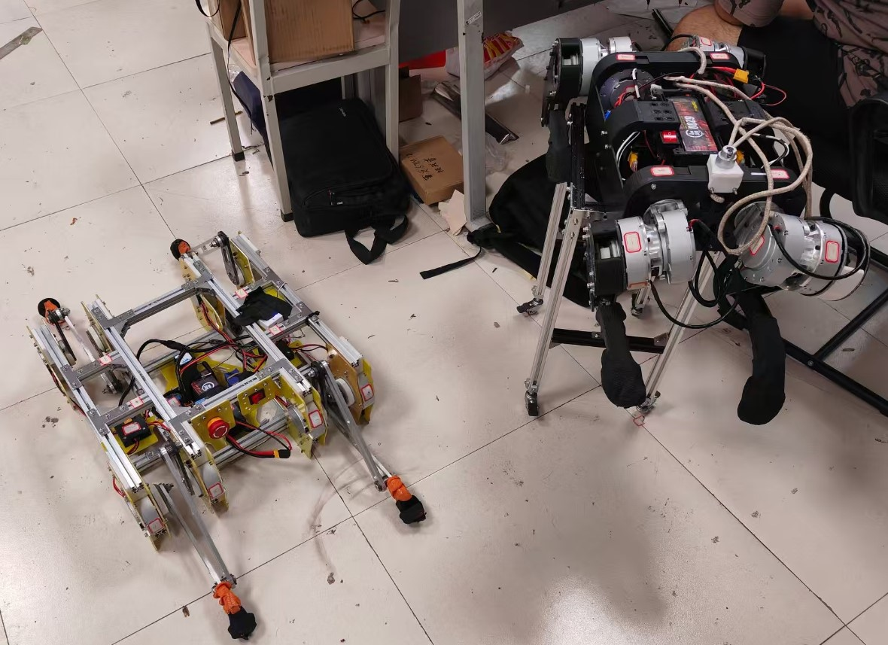

01四足机器人Quadruped Robot
基于 STM32 的四足机器人系统，完成了基本的行走、转向和避障功能，支持远程控制。STM32-based quadruped robot system, completed basic walking, turning and obstacle avoidance functions, supporting remote control.
充分调研了当前市场上的四足机器人设计及设计需求，电机采用宇树 GO-M8010-6 永磁同步电机，绘制分电板，用来设计整体硬件架构。主控使用嘉立创 EDA 基于 STM32 设计 RS-485、CAN、UART、IIC 总线的四层 PCB 板，完成了电路设计、PCB 绘制、焊接软硬件调试等工作，最终实现了四足机器人系统，完成了基本的行走、转向和避障功能，支持远程控制。After thorough research on current quadruped robot designs and requirements, the robot uses Unitree GO-M8010-6 permanent magnet synchronous motors. A power distribution board was designed for the overall hardware architecture. The main controller is a 4-layer PCB based on STM32 designed with JLC EDA, integrating RS-485, CAN, UART, and IIC buses. Work included circuit design, PCB layout, soldering, and software/hardware debugging. The final system achieves basic walking, turning, and obstacle avoidance with remote control.
关键技术Key technologies：4 层 PCB 设计，运动学正解，运动学逆解，IMU，SBUS 通信协议4-layer PCB design, forward kinematics, inverse kinematics, IMU, SBUS communication protocol